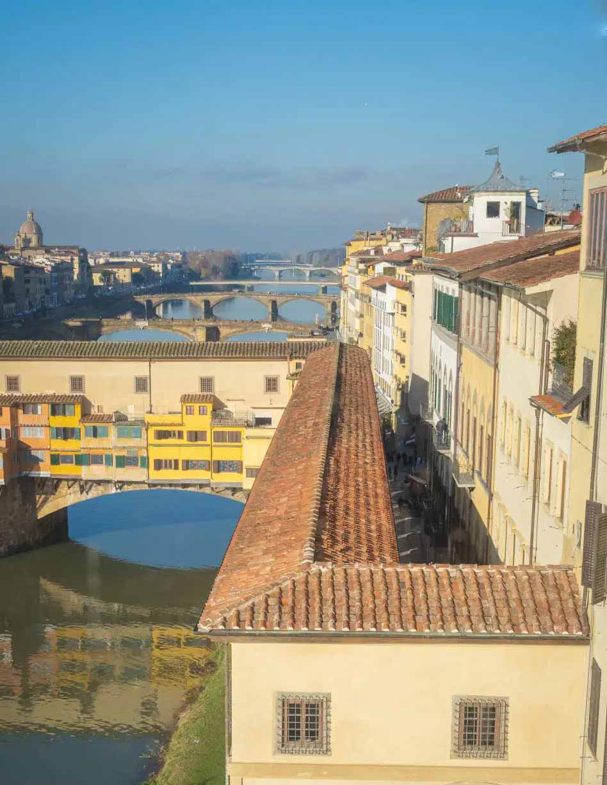
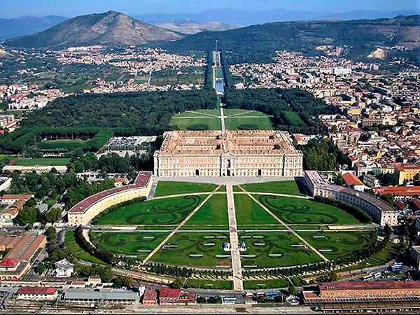
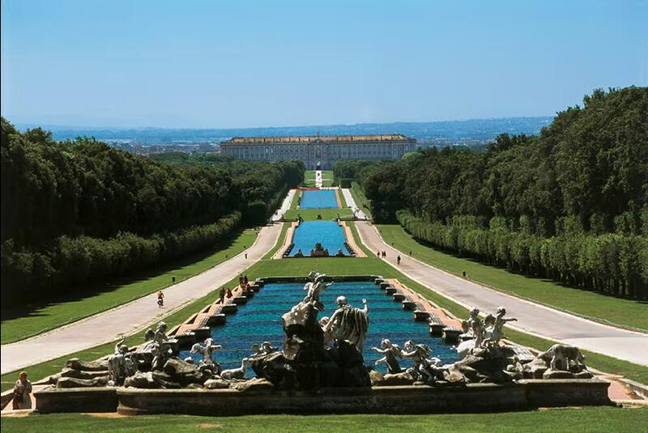
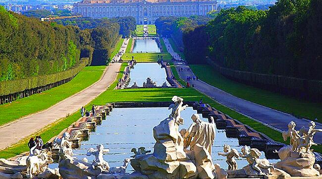
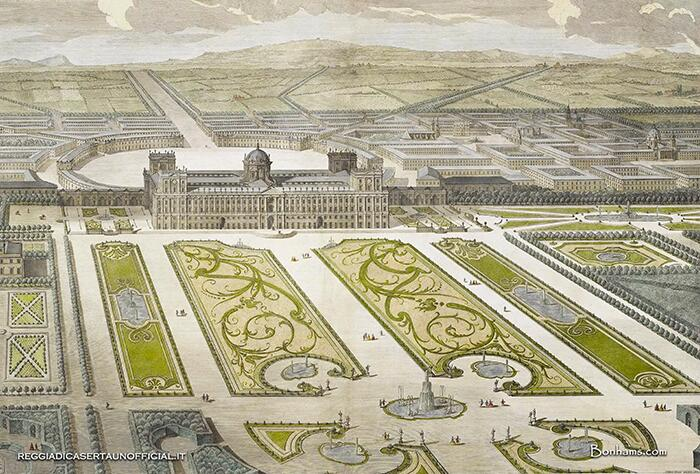
L’asse prospettico come direzione variabile del campo
L’asse prospettico concepito da Luigi Vanvitelli non è una semplice linea di simmetria, ma una forza percettiva che struttura l’intero sistema palazzo–parco–paesaggio. È una direzione che non si limita a orientare il movimento: mette in moto il campo visivo, costruisce un rapporto tra architettura e territorio, traduce in spazio l’idea di potere e controllo della monarchia borbonica.
Dalla soglia del palazzo l’asse funziona come un vero cannocchiale urbano: la prospettiva si comprime, intensifica la profondità e costruisce un vettore dominante che collega il vestibolo interno alla lontana cascata del Monte Briano. Questa direzione è percepita come un’energia continua, una spinta visiva che attraversa l’edificio, esce nel paesaggio e sembra organizzarlo secondo una logica unitaria.
Ma la forza dell’asse non è rigida: varia con la posizione del corpo. Nei primi metri del parco domina la centralità assoluta; procedendo in avanti, la prospettiva si apre e il campo si arricchisce di traiettorie secondarie — fontane, bacini, scarpate, boschetti — che modulano la percezione senza mai spezzare la tensione principale. La direzione non è dunque un vincolo geometrico, ma una struttura dinamica che si rafforza, si dilata, si sfuma, a seconda della distanza e della quota dell’osservatore.
Elemento decisivo è la via d’acqua: la sequenza di vasche e fontane, alimentate dall’Acquedotto Carolino, trasforma l’asse in un dispositivo vivo. L’acqua scorre, luccica, rumoreggia, rendendo la direzione un fenomeno sensoriale continuo, non solo visivo ma atmosferico. L’asse diventa così un campo di forze in cui natura, ingegneria e rappresentazione politica coincidono.
Nell’insieme, l’asse della Reggia di Caserta mostra come la direzione, intesa come variabile e non come linea fissa, possa organizzare il paesaggio su scala territoriale, costruire una percezione unitaria e trasformare il movimento del corpo in un’esperienza progressiva e coerente.
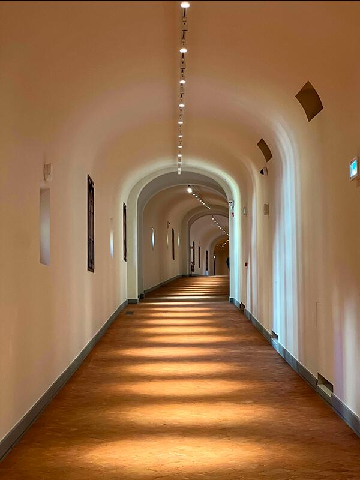
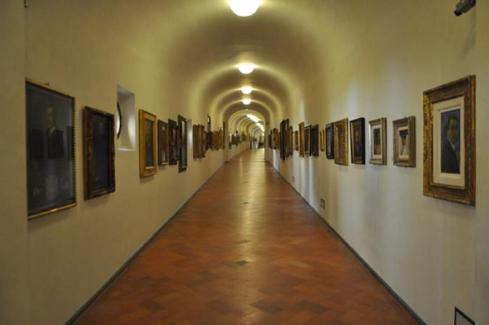
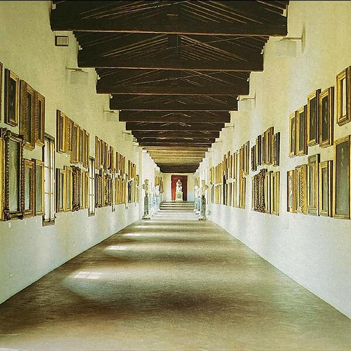
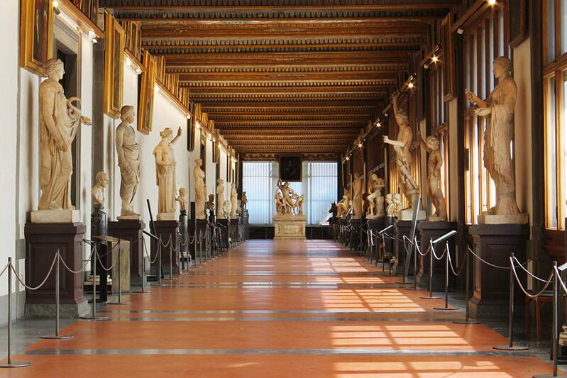
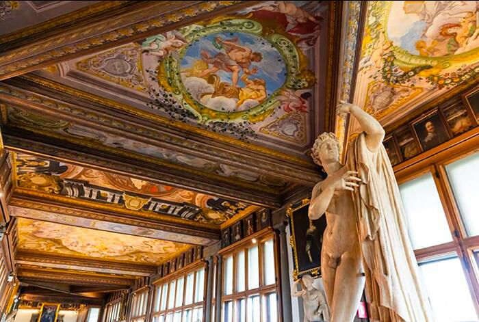
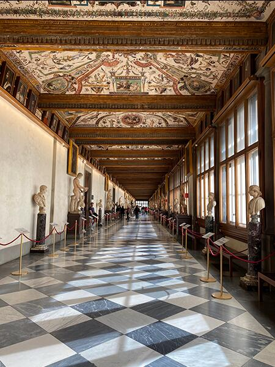
La sequenza come costruzione temporale del campo percettivo
La sequenza del Corridoio Vasariano è uno dei casi più chiari in cui lo spazio diventa tempo. Progettato da Giorgio Vasari come percorso sopraelevato che collega Palazzo Vecchio a Palazzo Pitti, il corridoio non è semplicemente un collegamento funzionale: è un dispositivo che orchestra la percezione, costruendo un’esperienza temporale controllata, graduata, misurata.
La continuità dei 750 metri di percorso non produce monotonia, perché è organizzata come una variazione sequenziale: tratti introversi, compressi, quasi silenziosi, si alternano a improvvise aperture panoramiche sull’Arno, sul Ponte Vecchio, sulla città. La luce non entra in modo uniforme: appare come evento, come interruzione atmosferica che modifica il ritmo del camminare e riallinea l’orientamento del corpo. Ogni finestra è un montaggio: una pausa visiva che rilegge la città dall’alto, trasformando Firenze in una parte integrante del percorso.
La sequenza costruisce anche una transizione simbolica: attraversare il corridoio significa passare dal potere pubblico (Palazzo Vecchio) alla sfera privata del principe (Palazzo Pitti). Questo passaggio non è immediato: è diluito in un tempo architettonico che dà forma alla soglia tra due mondi. Il controllo della luce, la variazione delle altezze, il succedersi di restringimenti e aperture definiscono un campo percettivo che accompagna il corpo, preparando gradualmente l’arrivo.
Nel tempo, il corridoio è diventato anche un percorso museale, ma la sua struttura originaria resta percepibile: è un’architettura che lavora per sottrazione, lasciando che siano la direzione, la luce e la sequenza a costruire l’esperienza. Restaurato nella sua nudità cinquecentesca, rivela oggi con ancora maggiore chiarezza l’intenzione primaria: non mostrare oggetti, ma costruire un tempo dello spazio.
Il Corridoio Vasariano dimostra che la sequenza non è un semplice susseguirsi di ambienti: è una variabile che modella la percezione, dà ritmo al campo e trasforma il movimento in un’esperienza narrativa. È l’architettura che diventa montaggio.
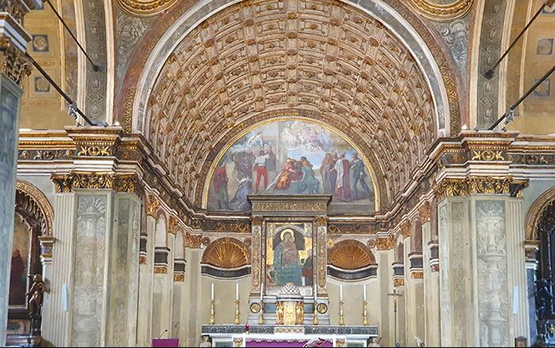
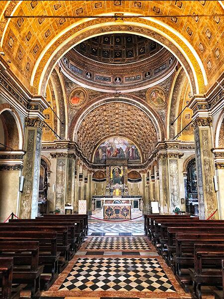
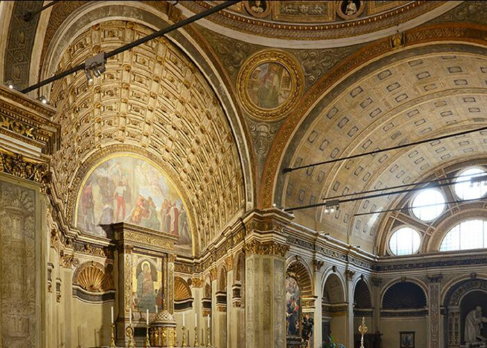
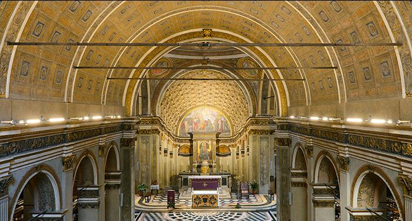
Il contrasto come variabile che trasforma il campo percettivo
Nel “finto coro” di San Satiro, Bramante dimostra con precisione quasi didattica che il contrasto non è un effetto ottico, ma una variabile progettuale capace di trasformare l’identità dello spazio. La profondità reale disponibile dietro l’altare è di soli 97 centimetri, ma la percezione costruita dall’architetto è quella di un coro profondo quanto gli altri bracci del transetto. La soluzione non è un trucco: è un modo radicale di usare il contrasto come forza che rimodella il campo percettivo.
In San Satiro, il contrasto genera un campo di forze che dilata lo spazio reale in uno spazio possibile. Bramante non maschera un problema: lo trasforma in un’occasione progettuale. Il coro è il luogo in cui la percezione diventa la vera materia dell’architettura.